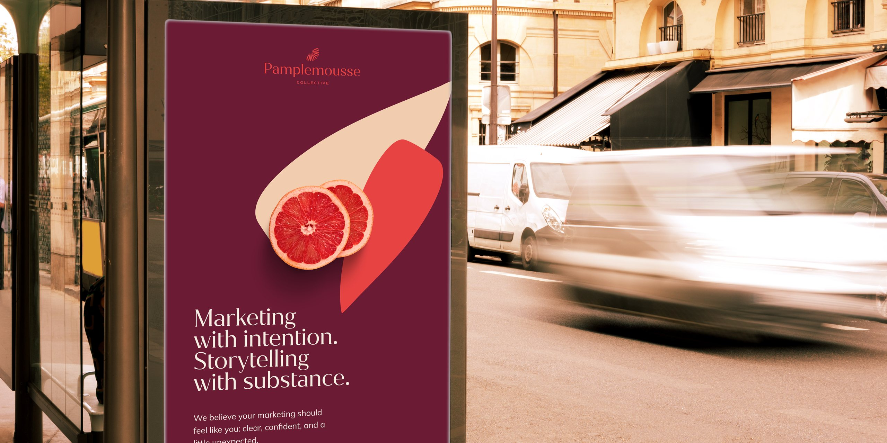

White-label design, from the designer's side
Most articles about white-label design are written by companies that sell design by the month. This one is written by a designer who works this way.
 By Julia Sonda · · 6 min read
By Julia Sonda · · 6 min read

Here's a situation a lot of agency owners know well. A client asks for a new brand identity. Your team is already full, or nobody on it does branding, and you don't want to say no. You also don't want the client to meet a stranger halfway through the project. That's usually when white-label design comes up.
I'm a brand and graphic designer, and a big part of my work is exactly this: designing for agencies, under their name. So instead of another dictionary definition, here's what it looks like from my side of the brief.
What white-label design means, in plain words
White-label design is design work made by an outside designer and delivered under your agency's name. Your client sees your agency, your process and your files. The designer stays behind the scenes, doesn't talk to your client unless you ask, and doesn't post the work without your permission.
It's a bit like ghostwriting. The book has the author's name on the cover, and the person who helped write it is fine with that. Nobody is being fooled, either. Agencies have always worked with specialists, and your client hired you for the result and for the way you run the project. That part doesn't change.
What makes it different from hiring a regular freelancer is mostly visibility. A freelancer builds a public portfolio and a name with each project. A white-label designer builds a reputation with agencies instead.
How a white-label project actually runs
Every agency has its own way of working, and part of my job is to fit into yours. Still, most projects follow the same shape.
1. The brief
You send me the brief and whatever your team has put together so far: notes from the kickoff call, the client's questionnaire, references, the date of the first presentation. I read everything and come back with questions. A good question at this stage can save a whole round of revisions later, so I'd rather ask one too many.
2. Scope and timeline
We agree on what I'm delivering and when. How many concepts, how many rounds, which files at the end. If the client was already promised something specific, like three logo directions or a 20-page guideline, I need to know before I start, not on the day of the presentation.
3. The work, shared with you first
I share the work with you at the stages we agreed on. You see it before your client does, every single time. You can ask for changes, push it in another direction or just say “perfect, sending it”.
4. The presentation
The work reaches your client the way your agency presents things. I can build the slides in your template, write short notes on the thinking behind each concept, or send everything organized for your team to drop into your own deck.
5. Feedback
Most of the time, client feedback comes to me through you. It sounds slower, but it's usually the opposite. You know the client, you can translate “can it feel more premium?” into something a designer can work with, and the client keeps one point of contact. Some agencies prefer to bring me into the feedback calls instead, introduced as part of their team, and that works well too.
6. Final files
At the end you get files that are ready to hand over: organized folders, clear names and the formats the client will actually need. Nothing in them points back to me.
What stays with you
Every agency sets this up a little differently, and that's fine. Still, a few things usually stay with you.
- The client relationship. It's yours, and how involved I am with your client is your call. Some agencies keep me completely behind the scenes. Others bring me into calls or let me talk to the client directly, as part of their team. I never reach out to your client on my own, during the project or after it.
- The credit. The work goes out under your agency's name. Sometimes your team sets the creative direction and I design from it, sometimes I lead the creative direction too. Either way, it's your agency's project.
- The final say. Creative decisions go through you, even when I disagree. (I'll tell you, though.)
- The work itself. Who owns the final files is something to put in writing before the project starts, so nobody has to guess later.
What about my portfolio? I don't share anything publicly without your permission. Some agencies are happy for me to show a project after launch, without their name or the client's. Others prefer I never show it. Both are completely fine, and it's something we settle at the start.
When white-label design makes sense
It's not the right setup for every agency or every project. It tends to work well when:
- Your team is full and the work keeps coming. Hiring takes months, and a project with a deadline doesn't wait.
- A client asks for something your team doesn't do. A social media agency that gets asked for a full rebrand, for example.
- You want the same designer every time. With ongoing work I get to know your team, your clients and what you expect, so nobody has to explain everything from zero with each new project.
- You work across time zones. I'm based in Spain and most of the agencies I work with are in the US and Canada. A brief that arrives at the end of your day often has a first reply waiting the next morning.
We've worked together over the past 18 months consistently and Julia always delivers promptly, and has endless creativity.
And when it doesn't
I'd rather say this upfront. White-label probably isn't the best fit if:
- You need someone in your office, or in meetings with the client in person.
- You need changes turned around within the hour, all day, every day. That's a job for someone on your team.
- Nobody on your side has time to look at the work before it goes to the client. Someone needs to own the creative decisions, even if it's ten minutes per round.
That last one has a fix, by the way. If your agency doesn't have a creative director for a project, the designer can take on that role too. I do this for some agencies, setting the direction before anything gets designed, and it's a different conversation from “just execute this”.
White-label designer, freelancer or design subscription?
Agencies usually compare three options. A regular freelancer can be great, but will often want to talk to the client and show the work publicly. A design subscription (the “unlimited requests for a monthly fee” kind) is quick for small, repetitive tasks like banners and social posts, and you may get a different designer each time. A white-label designer sits in between: one person who works under your name, follows your process and gets to know your clients over time.
For brand identities I'm biased, but I think consistency wins. A brand is a hundred small decisions that need to agree with each other, and that's much easier when the same person is making them.
Questions agencies ask me
Will my client ever know?
Only if you want them to. I talk to your client only when you ask me to, and then as part of your team. My name isn't on the files, and I don't post the work unless you say I can. If you'd like to tell your client you work with a specialist, that's your call too. Some agencies do.
Can we start with one project?
Of course. A lot of agency partnerships start with a single project. If it works for both sides, we can talk about ongoing work later.
Can you follow our creative direction?
Yes. I'm used to working with creative directors and existing brand guidelines. I can also develop the direction from the start, if that's what the project needs.
How do you charge?
I offer fixed project fees and hourly pricing, depending on the work. Send me the details and I'll prepare an estimate.
If you're thinking about bringing a white-label designer into your agency, I hope this made the picture a little clearer. When you have a project in mind, or just want to see how this would work with your team, send me a message.
Next, if branding is what you'd outsource: how to outsource a brand identity and still own it.